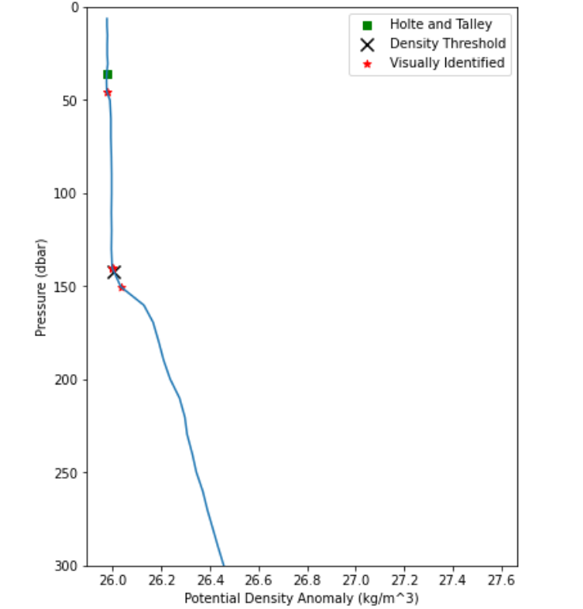
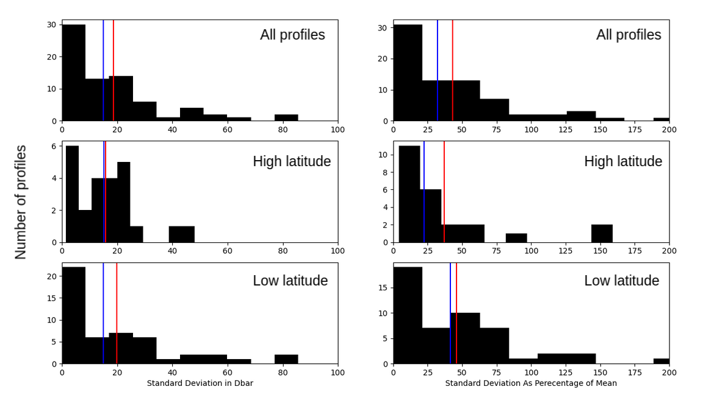

Mixed Layer Survey
Table of Contents
1. What is the mixed layer?
Most of the ocean is highly stratified by density.The notable exception is the very top of the ocean, where the sun’s heat and the wind and waves mix the water. This layer of well-mixed water is known as the mixed layer. As the only part of the ocean directly in contact with the atmosphere, the mixed layer transfers heat and freshwater from the atmosphere into the ocean interior. This makes the depth of that mixed layer an important quantity for oceanographers whether they are physicists, biologists, or chemists.
2. How do we use computers to find the depth of the mixed layer?

There are two most commonly used mixed layer depth algorithms. The first is the De Boyer Montegut (2004) (from now on DBM04) temperature or density threshold method which looks for the depth at which the temperature has increased by 0.2 C or the density has increased by 0.03 kg/m3 from the surface. Density threshold methods tend to perform poorer in sites of deep mixing. To remedy this, the second most commonly used mixed layer depth algorithm, the Holte and Talley (2009) density algorithm (from now on HT09) , employs a decision tree to choose between the threshold methods of DBM04and other metrics in sites of deep mixing.
Ultimately, because there is no precise definition of the ocean’s mixed layer, the gold standard for determining the depth of the mixed layer from depth profiles of salinity, temperature and pressure is an oceanographer's individual assessment after looking at the data. The algorithms of DBM04 and HT09 were both developed to match the mixed layer depth as visually identified by the algorithm's creator. The figure below shows an example depth profile of density with the DBM04 and HT09 algorithm outputs, as well as the visually identified mixed layer depths (VIMLDs) of oceanographers.
3. Do oceanographers visually identify the same mixed layer depth?
If the gold standard for the mixed layer depth is the VIMLDs of oceanographers, how do well oceanographers agree on the mixed layer depth? Is it as easy as it can seem in simple examples? The spread of oceanographer's identification of the mixed layer would provide us with a lower bound on the error we can expect in calculating the mixed layer depth with computer algorithms.
4. Creating a survey
To answer this question I created this survey using Node.js and mongodb. The survey displays 150 hydrographic profiles from all across the world, and over different seasons. To date, I have collected ~1200 identifications from about 24 respondents. All the respondents whose data was considered in this post are undergraduates, graduate students, or professors who do oceanographic research.
5. Results

Let's first look at how good oceanographers are at actually determining the depth of the mixed layer. The figure above shows the distribution of the average difference between a respondent’s answer and the average answer for each profile. High latitude profiles are taken above 60°S, low latitude profiles are taken below 60°S. The blue vertical line shows the median error, and the red the mean. These results show that the standard deviation of oceanographer identifications is on average 30% of the average mixed layer depth.
It is worth looking at more at the raw VIMLD's to see the source of this disagreement. Namely, the question that I had was whether oceanographer's VIMLD's are split, or spread? If their answers are split between two or more depths, that suggests a fundamental disagreement in the MLD, however a spread would mean oceanographers agree roughly on the location but aren't very precise.
From browsing through the profiles I got the sense that in locations with large disagreements it was almost always a question of respondents being split across multiple possible mixed layer depths (see Figure 1) rather than spread around a single mean. This is troubling as it suggests the mixed layer depth may be fundamentally ill-defined.
6. Closing thoughts
This survey was a fun project. Ultimately it is limited by the number of respondants and profiles, but I think it shows how slippery a quantity the mixed layer depth can be. Please write me if you would be interested in viewing the data.
This article's follow up on training a machine learning model to better estimate the mean VIMLD will be posted shortly.